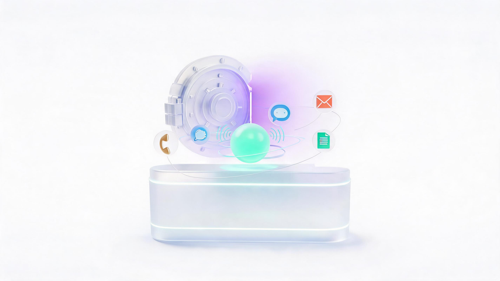
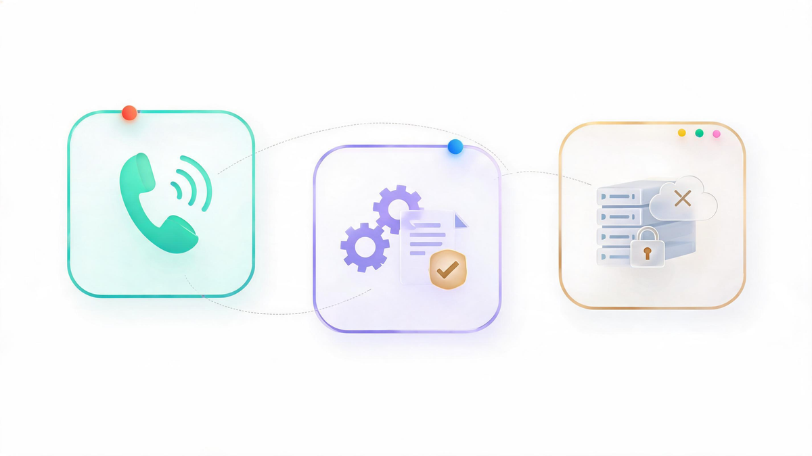
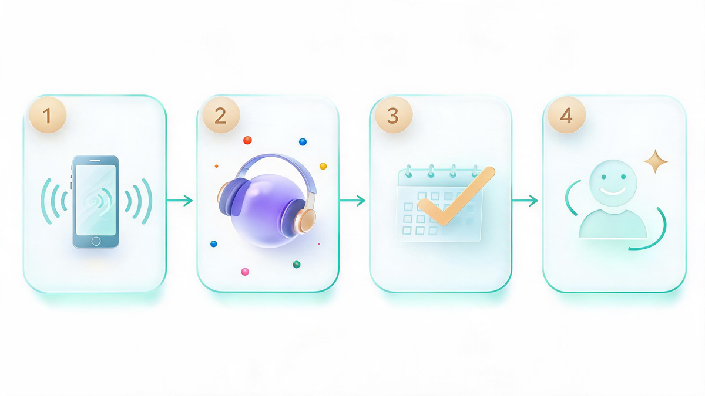

Private AI Like Zanus: How It Works, Is It Worth It (2026)

📑 Table of Contents
Key Takeaways
- Zanus = three products: Front Office AI (voice/chat/email, 40 languages), verified Back Office, and owned on-premises AI Servers.
- Per-company pricing, not per-seat — 7-day free trial; servers are quote-only with no published list price.
- vs ChatGPT Enterprise: the real difference is deployment control and voice channels, not confidentiality alone.
- Alternative routes exist: DIY Ollama stacks (most private, most work) and developer voice platforms (Retell, Bland, Vapi).
- Fastest test: run the free trial on a real week of missed calls and count conversions.
Searches for "private AI chatbot Zanus" jumped to roughly 1,600 a month almost overnight, and the SERP is still mostly the company's own pages. That gap is why this guide exists: what Zanus actually is, how its private AI works, how it compares with ChatGPT Enterprise, and whether the "your data never leaves the building" promise justifies the price.
Zanus AI is a Florida-based technology company (Fort Lauderdale) that builds what it calls a full stack of private artificial intelligence — customer-facing assistants, internal office agents, and owned on-premises AI servers. It won CES 2026 and ISE 2026 innovation awards and TMCnet's Enterprise AI Product of the Year, per the company's site.[1]

What Is Zanus AI? The Three Products
Zanus sells three products designed to run together:
- Front Office AI (SaaS): the AI your customers talk to. It answers phone calls, chat, email and web forms around the clock, books appointments, quotes prices and calls leads back — in 40 languages, built from your own website and knowledge base. Zanus advertises 53 industry configurations (healthcare, auto dealers, legal, home services, hospitality, real estate, manufacturing, retail) and 14 job types such as After-Hours Answering, Booking Desk, Auto-Call & Reminders, and Inbound Sales.[1]
- Back Office AI: the internal counterpart. It reads documents, drafts replies, schedules and automates work — with a differentiator called the Brain Verifier, which checks every answer against your approved sources and displays the citation.[1]
- AI Servers (on-premises): for companies that want to own the hardware. The Prime server is a single-node appliance running the Zanus AI OS with 15-plus prebuilt business modules — document intelligence, private chat, computer vision — and a precision vector store for your documents. Larger deployments scale to a multi-node Enterprise cluster. Zanus positions these servers directly against ChatGPT Enterprise: same LLM intelligence, but the data and the hardware stay yours.[2]
How the Front Office Voice Agent Works
The voice flow is Zanus's most-searched feature, and it works like this: give Zanus your website, and within about ten minutes it builds a private trial sandbox[1] — your services, your departments, your rules — with a phone line attached. From there the assistant answers calls in the caller's language, captures booking details, sends confirmations and schedules callbacks. The after-hours use case drives the pitch: a 7 PM "do you take my insurance?" call gets answered instead of lost to the next competitor.

Private AI vs ChatGPT Enterprise
This is the comparison buyers actually care about, and it comes down to four columns:
| Dimension | Private AI (Zanus model) | ChatGPT Enterprise |
|---|---|---|
| Data location | Your premises (server) or vendor sandbox (SaaS) | OpenAI's cloud |
| Pricing model | Per company (SaaS); hardware purchase (server) | Per seat, per month |
| Setup | Website → 10-minute sandbox | Admin console + seat provisioning |
| Best for | Call-heavy SMBs, regulated teams wanting ownership | Teams already standardized on OpenAI |
OpenAI states that enterprise business data "remains confidential, secure, and entirely owned by you," and that inputs are not used for model training[5] — so privacy is not the whole story. The real differences are deployment control, voice channels, and pricing shape: per-company versus per-seat math diverges fast once headcount grows.
The On-Premises Option: Prime to Enterprise Cluster
The AI Server line is where "private" becomes literal. You buy the hardware once — the single-node Prime or the multi-node Enterprise cluster — plug it in, and the Zanus AI OS ships with the 15+ modules preinstalled. Vendor ROI materials argue the case through Section 179 tax treatment and a claimed 40-day payback versus ongoing cloud token spend; treat those as vendor claims[2] and run your own three-year total-cost math before deciding.
The Private AI Landscape: Zanus & Alternatives
Zanus is not the only route to private AI. The honest map:
| Approach | Examples | Private how? | Fits |
|---|---|---|---|
| Business AI platform | Zanus Front Office + Back Office | Own-knowledge sandbox; on-prem servers | SMBs wanting done-for-you |
| Owned AI appliance | Zanus Prime / Enterprise servers | Hardware inside your building | Regulated, call-heavy firms |
| DIY local stack | Ollama, PrivateGPT | Fully local models | Technical teams |
| Voice-agent platforms | Retell, Bland, Vapi, PolyAI, Synthflow[13] | Cloud, configurable compliance | Developer-led voice builds |
| Enterprise suites | ChatGPT Enterprise, Claude Enterprise | Cloud with data controls | Office productivity at scale |
The DIY path (Ollama running local models) is the most private and the most work; independent guides cover the hardware math[12]. The voice-agent platforms dominate developer conversations but don't bundle Front-Office-style industry playbooks.
Who Should Choose What
A simple fork: if your business loses revenue to unanswered calls and you want it fixed this week, the Front Office trial is the fastest test — seven days free, no card, sandbox becomes the account[1]. If you handle health, legal or financial data at scale and "your servers" is a requirement rather than a preference, the on-premises Prime/Enterprise path is the actual private-AI product. If your team is technical and cost-sensitive, a local Ollama stack may beat both.
Is Zanus Worth It? Pricing Reality Check
Published pricing: none. The SaaS trial is free for seven days per company, and the AI servers are quote-only — no list prices, confirmed by independent reviewers[4]. The value case rests on three vendor claims (Section 179 savings, 40-day payback, 3-year TCO advantage) that deserve scrutiny with your own call volume and token bills. The clean test: run the free trial on a real week of missed calls and count what the AI actually converted.
Frequently Asked Questions
What is Zanus AI?
A Fort Lauderdale-based AI company selling a full private-AI stack: a customer-facing Front Office (voice, chat, email, web forms in 40 languages), a verified Back Office assistant, and owned on-premises AI servers running the Zanus AI OS with 15+ business modules.
Is private AI actually private?
On-premises deployments keep data and hardware inside your building; SaaS trials run on the vendor's sandbox. Enterprise ChatGPT and Claude keep data confidential and out of model training but remain cloud-hosted — the difference is deployment control, not confidentiality alone.
How much does Zanus cost?
SaaS uses per-company pricing with a 7-day free trial; no published rates. AI Servers (Prime, Enterprise cluster) are quote-only. Vendor ROI pages claim Section 179 savings and ~40-day payback — verify with your own numbers.
What's the best private AI alternative to ChatGPT?
For ownership and voice channels, Zanus's on-premises servers; for developer-built voice agents, Retell, Bland or Vapi; for zero-hardware privacy, a DIY Ollama local stack; for productivity suites, ChatGPT or Claude Enterprise.
Can private AI answer phone calls?
Yes — Zanus Front Office answers calls 24/7 in 40 languages, books appointments and schedules callbacks from your own business knowledge; dedicated voice platforms (Retell, Bland, Vapi, PolyAI, Synthflow) serve developer-led builds.
📚 Sources & Citations (15)
- Zanus AI — official site (products, trial, awards) — zanusai.com
- Zanus AI — Private AI Server systems page — zanusai.com
- Zanus AI — Prime on-premises AI server product page — zanusai.com
- AI Review Zones — Is Zanus AI Worth It? (2026 review, Jun 2026) — aireviewzones.com
- OpenAI — Business data privacy, security & compliance — openai.com
- Deepvine — Private AI vs. ChatGPT Enterprise: Data Safety Compared (Jul 2026) — deepvine.ai
- AdvisorLabs — Private LLM vs ChatGPT Enterprise (Feb 2026) — www.advisorlabs.com
- K3 Techs — Private GPT vs ChatGPT: Data Risks (Mar 2026) — k3techs.com
- PremAI — Claude vs ChatGPT Privacy (Jul 2026) — www.premai.io
- PremAI — Private LLM Deployment: Practical Guide (Feb 2026) — www.premai.io
- NetFriends — AI Privacy Policy Evaluation: ChatGPT vs Gemini vs Claude (Oct 2025) — www.netfriends.com
- Nazar Boyko — Running Local LLMs With Ollama (Jun 2026) — www.nazarboyko.com
- Retell AI — 8 Best AI Voice Agent Services for Business (2026) — www.retellai.com
- StartupHub — 20 Best AI Voice Agent Platforms 2026 — www.startuphub.ai
- Brilo — 10 Best AI Voice Agents in 2026 (Tested) — www.brilo.ai